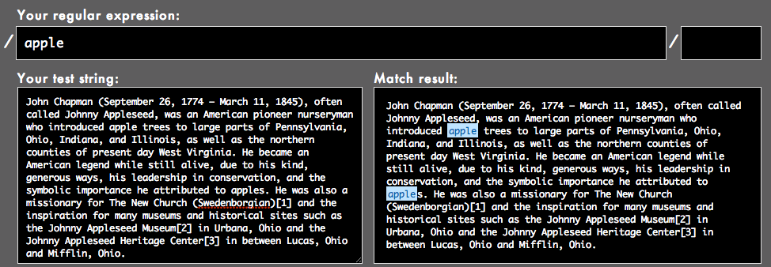
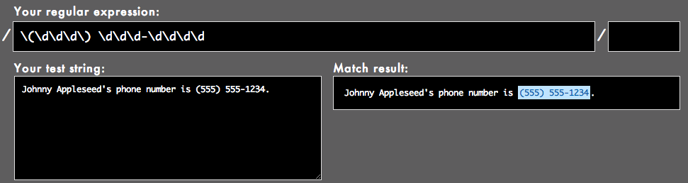

Regular Expressions
Posted on 27 July 2014 by Kyle Daugherty
A regular expression is a search pattern that can be matched against some text. For example, you could use a regular expression (a.k.a. regex or regexp) to see if a paragraph contained the word "apple." Or you could use a regular expression for something a bit more complex like checking to see if text contained an email address or a phone number. Part of what makes regular expressions so powerful is that you don't have to know the actual text or email address or phone number ahead of time. You just need to know the pattern to search for.
Some ways you can use regular expressions are:
- Testing a string to see whether it matches a pattern;
- Extracting from a string the sections that match all or part of a pattern; and
- Modifying the string by replacing the parts that match the given pattern.
Regular expressions can seem a bit daunting to beginners due to the complex set of symbols or characters used to describe the search pattern. So, I think the best way to illustrate precisely how they work is by giving some examples.
The easiest way to create a regular expression is by placing the search pattern between two forward slashes. This would create a regular expression literal. So, using the example from above, we could use the pattern /apple/ to see if the following paragraph from Wikipedia included the word "apple." I'll be using Rubular to test the regular expression (Note: Rubular automatically adds the leading and trailing forward slashes).
As you can see, our search pattern worked as expected. Rubular higlights the matched result(s) in blue.
Our first example was a very basic regular expression that is similar to how you might use the Find feature in a Word document or Spotlight on a Mac. Let's dive a little deeper by taking a look at how we might check to see if some text includes a phone number. This is just one approach - there are other ways this could be done as well.
In our phone number example, we had to escape the opening and closing parentheses by using a backslash. This is because parentheses have special meaning in regular expressions. So, if we actually want the search pattern to look for a parenthesis, then we must escape it. There are several other special characters that must be escaped. For a complete listing, take a look at Regular-Expressions.info.
We also used \d which is regular expression token with special meaning. The \d is shorthand for the pattern of a single digit from 0 through 9.
We covered just a couple of examples on how you might use regular expressions. Obviously, there are tons more you can do with them and I hope this demonstrates how powerful they can be.